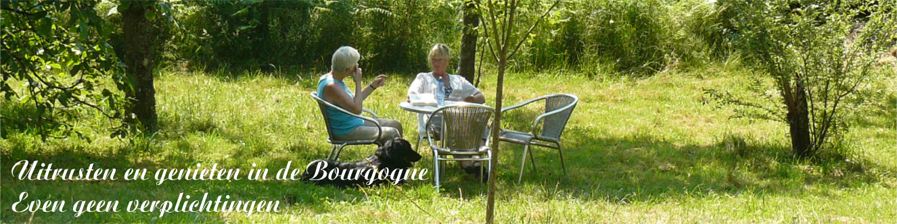
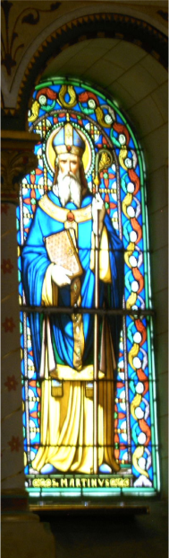
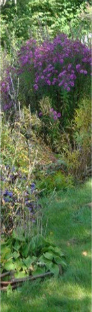
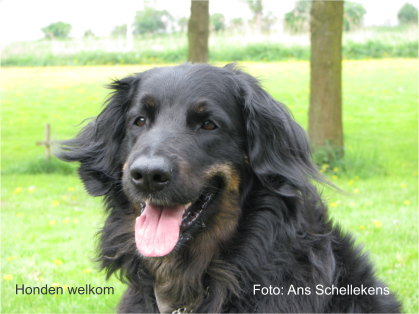
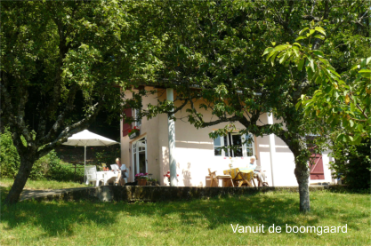
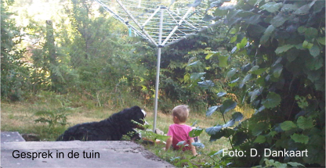

Gastenboek
Een greep uit de reacties van de gasten
aug/sept. 2025: De kleuren en spiritualiteit van de vele kloosters, kerken, ramen, bossen en 'routes' geven mogelijkheden om creatief te worden. In La Boulaye ontmoeten we twee kunstenaars die vertellen over de Boeddhistische Tempel Palden Shangpa. De kleuren geven symboliek aan het leven. Ik probeer dit 'te vangen'. De poort wordt opeens 'de toegangspoort tot ons kleine paradijsje'. Zo ervaren wij onze gîte. We genieten, we hebben genoten. De bakker, de kruidenier en de geweldige Auberge gaan we missen. Ineke en Theo
aug. 2025: De eekhoorntjes waren druk bezig om hazelnoten te verzamelen en de vlierstruiken zijn veel vogels al bezig om de bessen te verschalken! Er is inmiddels een aanzienlijke lijst met waarnemingen van de in Dun-les-Places aanwezige flora en fauna bijgevoegd. Clemens
juli/aug 2025: We hebben weer genoten, wat is het leven hier toch (meestal) ongecompliceerd. Veel gelezen, de topper was 'Son odeur après la pluie' (Zijn geur na de regen) van Cédric Sapin-Defour, een ode aan de liefde tussen de mens en zijn hond. Daan en Menna
juni 2025: Op een enkele dag na, mooi (warm) weer gehad. Dagelijks bezoek van de gaai die de kersen uit de boom kwam halen. Het waren fijne dagen. Volgend jaar zijn we er weer. Coen en Gitte
mei/juni 2025: Wat is dit toch een heerlijk stekje. Het huisje is weer fris geschilderd. Genoten van de zwarte, stile nachten. Rob, Odette & Chouchou
mei 2025: We hebben weer genoten van het weer, de eitjes, de knuffels van Quispel. En wat is het hier toch mooi. De natuur is ontploft! Nelleke, Sacha & Dibbes
april/mei 2025: Weer twee weken heerlijk genoten van onze geliefde Morvan. Menna & Daan
okt 2024: Het weer zag er op voorhand niet zo goed uit, maar jemig wat hebben we geboft. Met name de 2e week was super. Nu is alles hier super natuurlijk, weer of geen weer. Tot volgend jaar! Nelleke & Sacha
okt 2024: Dagelijks kunnen zien hoe een eekhoorn z'n wintervoorraad uit de notenboom bij elkaar scharrelt en ook nog een jagende vos betrapt. Coen, Gitte & Indy
sept/okt 2024: Vier weken! Hetlijkt een hele tijd en toch is het snel voorbij. Wat hebben we weer genoten! Rob, Odette & Chouchou
aug/sept 2024: Ik gedij bij een grote afwisseling van weer, en dat hebben we weer in overvloed gehad: veel zonneschijn, beetje regen, soms erg warm, andere dagen wat koeler. In april werd de boulangerie 'Au petit délice' in het dorp geopend: Geweldig! Van alle lokale bakkers is dit wel de beste! Fam. Dankaart
juli 2024: We hebben heerlijke weken gehad! Wat een prachtige tuin waarin de honden vrij rond konden lopen. En voor ons een gezellig huisje met goede voorzieningen. In het Lac de Pannecière kun je heerlijk rustig zwemmen in een paradijselijke omgeving. Betty, 'de jongens'en Mieke
mei/juni 2024: Van klooster naar tempel. Van kerk naar verzetsmusea. Van culinair, naar picknick in de natuur. We zien uit naar een volgend seizoen hier in Dun-les-Places. Theo en Ineke
mei 2024: Wat een heerlijke week hebben wij weer achter de rug. Jullie huisje en de ontvangst blijft een cadeautje. Sacha, Nelleke & Dibbes
april/mei 2024: In augustus komen we weer met alle genoegen voor een volgende vier weken in de Morvan. Menna en Daan
okt 2023: Deze keer was het manoeuvreren tussen de buien door. Dat ging ons goed af, veel gewandeld, zelfs nog even buiten gezeten, er is hier genoeg moois te zien. Verder heerlijk genieten in het huis met de houtkachel lekker aan, boek op schoot, wijntje erbij, wat wil een mens nog meer. Graag tot mei 2024! Nelleke, Sacha & Dibbes
sept/okt 2023: Het was vier weken genieten van de heerlijke, herfstige Morvan. Weemoedig sluiten we deze vakantie af en kijken uit naar onze terugkomst in april volgend jaar. Daan, kleinzoon Levy en Menna
sept 2023: We hebben genoten bij jullie, het is hier heerlijk tot rust komen in een schitterende omgeving. De honden vonden het geweldig in zo'n mega eigen tuin. En wij vonden het ook heerlijk, je kon het zo gek niet bedenken of alles is aanwezig in het huisje. We komen graag terug. Tim, José en de hondjes
aug-sept 2023: Na vijf jaar niet hier te zijn geweest, lukte dat dit jaar wel. Het was weer fijn voor ons vieren, zowel voor de twee mensen als de twee honden. We rijden morgen door naar Normandië en hopen dat het daar net zo leuk is als hier! Geertjan, Marja en de twee honden.
augustus 2023: Wandelingen langs de Cure, wijnproeven in Meursault. Dineren bij La Vieille Auberge in St. Agnan, Een bezoek aan het prachtig Avallon en ga zo maar door. Dank! Judith, Peter & Bali
juli 2023: Wat een schitterende omgeving. We zijn naar aantal plaatsen geweest zoals Avallon, Quarré les Tombes, Vézelay, het kasteel van Bazoches enz. Dus genog te zien in de buurt. Maar het wandelen in het eigen bosrijke gebied was supermooi. Peter, Silvia & Noa.
juni 2023: Auxerre verraste ons positief en daar gaan we zeker een keer naartoe terug. We hebben het Mémorial de Dun-les-Places bezocht, een 'stijlvolle'weergave van een paar heftige dagen in de geschiedenis. Het was weer een mooie week. Tot ziens! Coen, Gitte en Indy
mei/juni 2023: Vier weken zijn we hier geweest. We hebben het weer heerlijk gehad met mooi, zelfs prachtig weer. Veel wild gezien: reeën en zwijnen. Ook veel vossen, de laatste week was er op de weide aan de overkant een vos met vier jongen te zien. Rob, Odette en Chouchou
mei 2023: Wat een rust en mooie vergezichten, Ook onze hond kwam aan zijn trekken, zij had een prachtig stuk grond om te dollen met Quispel. Irene, Eelke & Badu
mei 2023: Wat is het hier toch mooi in het voorjaar, al die verschillende kleuren groen, de bosanenemonen, de sleutelbloemen, prachtig. En die zalige rust, zo fijn. Nelleke, Sacha & Dibbes
april 2023: We hebben weer ruim een week mogen genieten, deze keer van het koele voorjaar en een lekker snorrende kachelin de avonduren. Net genoeg om weer op te laden. Menna en Daan
okt. 2022: Het is hier als vanouds heerlijk rustig, maar de tijd gaat hier wel veel te snel! We hebben weer genoten van 't huis, de omgeving, de wijn, de pruimenjam, de eekhoorntjes en de dolle capriolen van Quispel en Dibbes. Tot volgend jaar! Nelleke, Sacha & Dibbes
sept./okt. 2022: We hebben een prachtige trip gemaakt naar de Rochers du Carnaval bij Uchon, een enorm rotsmassief bestaande uit verschillende grote granieten rotsen. Ook genoten van de zwarte stille nachten en van de sterrenhemel bij helder weer, maar ook van de eekhoorntjes die noten kwam hamsteren. Tot volgend voorjaar. Rob, Odette & Chouchou.
aug. 2022: Wat een fantastische tijd hebben we hier gehad. Boeklezen en luieren! En soms voel je je een pelgrim, als je wat kloosters en kerken bezoekt. Jullie gîte is compleet. Je hoeft zelf haast niets mee te nemen. Ineke en Theo uit Drenthe.
juli/aug 2022: (Morvandag 368-396.) Dun-les-Places heeft opnieuw een meer dan voortreffelijke bakker en we hebben onze voorraad Chablis, Irancy en Epineuil op peil kunnen brengen.Menna, Daan, Romulus.
juli 2022: Twee heerlijk rustige weken gehad. We kijken nu al uit naar volgend jaar... Wim, Ellen en Skipper.
juni 2022: De geschiedenis van Dun-les-Places blijft boeien. De oude begraafplaats hier is een aanrader - qua historie. Het is een schoone week geweest. Adriana, Drikus en Henk.
juni 2022: Genieten van de vogels, de haan 's ochtends en het staren in de verte, maar vooral ook de heerlijke wandelingen door de bossen en langs de Cure. Paul en Helen.
juni 2022: De kleuren groen, de bloemen die bloeien, de vogels die fluiten en de vos met jongen die spelen in 't weiland waar we op uitkijken. Het was weer fijn. Coen, Gitte en Indy.
juni 2022: De omgeving heeft me oprecht verrast, evenals de vriendelijkheid van de bewoners. Annick, Puk & Billie.
mei 2022: Was ik toch weer mee naar dat superhuisje in de Morvan. 3x gezwommen in Lac des Settons! Dibbes de labrador.
mei 2022: Wat een geweldige plek, de boomgaard, het huisje in een woord 'fantastisch'! We genoten allemaal met volle teugen. Peter, Jacqueline en Pleun.
mei 2022: We hebben twee heerlijke weken gehad [...] en komen graag nog een keer! Jos en Marieke.
april 2022: Het was weer een week van genieten, van het huisje, van de vogels, van een ree, de donkere nachten met prachtige sterrenhemels. Menna, Daan, Romulus.
oktober 2021: De laatste week van oktober nog even naar ons geliefde Frankrijk. En dan hier aankomen! Wat een fantastische plek: de rust, de natuur, de kleuren, echt geweldig. En niet te vergeten jullie superhuisje, werkelijk alles is er. We hebben genoten, heerlijk gewandeld, gezwommen (dwz. onze labrador), in 't herfstzonnetje gezeten en 's avonds lekker bij de houtkachel. Nelleke, Sacha & Dibbes
september 2021: Drie volle weken. Drie weken genoten. Drie weken omgevlogen. Rob, Odette en Chouchou
aug. 2021: De week is omgevlogen, 't weer was prima, lekker gewandeld en wat stadjes bezocht. En natuurlijk genieten van de rust en natuur! Tot volgend jaar. Coen, Gitte en Indy
juni/juli 2021: Alweer de vierde keer op dit prachtige stukje. Bij aankomst een roepende ransuil in de ceder, relmuizen in het haar, snuivende geluiden om twaalf uur in de nacht, een treurende vos bij zijn doodgereden maatje, een kip door de vos verschalkt... Ik ben bijna weer aan vakantie toe! Genoeg redenen om weer terug te komen. Heel bijzonder om mee te maken is ook dat je hier de kans hebt om alleen natuurlijke geluiden te ervaren. Clemens
mei 2021: Negen heerlijke dagen om even te wennen dat we in juli/augustus weer terugkomen... Fam. Dankaart
sept. 2020: Ondanks dat het een wat 'vreemde' vakantie was - ook weer onder invloed van Covid, waardoor alle plekken waar (veel) mensen komen door ons gemeden zijn - hebben we heerlijk genoten. Genoten van het mooie weer, de wandelingen, het zwemmen in het Lac des Settons. Rob, Odette en Chouchou.
aug. 2020: Ondanks alle Corona-maatregelen waren er geen belemmeringen voor ons om af te reizen naar "'t huisje'" in de Morvan. We hebben wederom genoten van de rust, omgeving en het weer. Coen, Gitte en Indy.
juli/aug. 2020: We kunnen er weer tegen, en over een jaar komen wij weer heel graag naar het Roze Huisje in deze heerlijke Morvan. Menna, Daan en Romulus.
sept. 2019: Met z'n drietjes weer twee heerlijke weken genoten van al het moois van de Morvan en het fijne vakantiehuis. Bedankt en tot volgend jaar! Ger, Anneke met Aris.
sept. 2019: Volgend jaar komen we weer terug om te genieten van de omgeving en de rust. Coen, Gitte, Semmy.
aug/sept. 2019: [...] Slapen in een echt zwarte nacht, zodat je niet weet of je ogen open of dicht zijn. 's Nachts naar buiten gaan en kijken naar al die sterren, hoe indrukwekkend is dat! En dankzij een app op de smartphone kunnen zien welke ster of planeet je ziet. We hebben het weer heerlijk gehad! Rob, Odette en Chouchou.
aug. 2019: Zodra je hier aankomt heb je meteen het 'vakantiegevoel'. Zalig weer gehad. Spijtig dat de tijd zo snel gaat! Fam. Buzeijn.
juli/aug. 2019: Het was weer paradijselijk. Veel gewandeld langs de Cure. Inclusief de wisselvallige weersomstandigheden, van extreem heet (gelukkig maar een paar dagen), veel mooie zomerse dagen en enkele dagen met welkome regen, weer volop genoten van de heerlijke Morvan. Fam. Dankaart.
juli 2019: We hebben genoten van ons mooie verblijf in de Morvan. De mooie omgeving, de rust, het huisje, alles was 100% naar wens. Fam. Heerkens (5 personen en Murphy).
juni 2019: We hebben veel gezien en geleerd. Tot binnenkort! Jaap en Margot & de hovawarts Cosmo, Chilli, Arwen.
juni 2019: Wil nog even bedanken voor de fijne tijd die wij in jullie huisje hadden. We komen graag nog een keer bij jullie terug :-) Pieter en Marianne.
mei 2019: We hebben een fijne week vakantie gehad in de voor ons onbekende Morvan. We herinneren vooral de mooie wandelingen, vergezichten , leuke watervalletjes, rivieren en het lekkere eten. Graag komen we terug om de sfeer en de zuivere lucht op te snuiven in de nazomer of herfst. Jeroen, Katrien en onze 4 viervoeters.
mei 2019: Het huis is voorzien van alles wat we nodig hadden, vooral de houtkachel. Want met regen en mist en ca. 8 graden is deze erg prettig. Vanuit dit centraal gelegen punt hebben we elke dag een wandeltocht ondernomen (dus zo slecht was het weer ook weer niet ;-) Prima bedden en het is hier goed lezen. Hans en Els.
april 2019: Menna vond de natuur hier deze week zo mooi, met al het ontluikend groen. Weer met volle teugen genoten van een weekje paradijs. Daan, Menna & Romulus.
okt. 2018: Met temperaturen van 25 graden hebben we geboft met het weer. 's Avonds een keer een vosje en een das mogen zien. De sterrenhemel is geweldig mooi. De taartjes die Monique heeft gebakken van de appels, pruimen, kastanjes, walnoten, beukennootjes en hazelnoten waren erg lekker! Monique, Clemens & Simon.
sept. 2018: Wat een heerlijk relaxte week hebben wij gehad met onze dochter (1) en onze hond. Fantastisch weer gehad en vaak gepicknickt aan de Cure. Ronald, Marieke, Guusje & Juna.
sept. 2018: Het was geweldig weer en dat maakt zo'n week nog prettiger. 's Morgens wandelen of een stad bezoeken en 's middags onder de bomen relaxen... Ook de prachtige sterrenhemel niet te vergeten! Coen, Gitte & Semmy.
aug/sept 2018: Voor ons was het de 1e keer hier en het is ons uitstekend bevallen. In de vroege ochtend zat ik met een kop koffie naast het huisje te kijken hoe de zon achter de heuvel vandaan komt en hoe onze 8 maanden oude bouvier bovenaan met haar bal begon, die als een kat naar beneden liet rollen met haar poot en 'm dan weer naar boven bracht en opnieuw begon. Alles dik in orde. Geertjan en Marja.
aug. 2018: Voor de 5e keer dit fijne plekje ontdekt. Ook zonder hond is het hier goed toeven [...] We hadden graag wat langer gebleven, maar dat denken we er maar bij ;-) Bon regards et merci, Ineke en Theo.
aug. 2018: Als ik regionaal de bakkers vergelijk, dan staat 'La fournée' in Dun-les-Places met een 10 op de hoogste plaats. [...] Wat is dit toch een heerlijk land, waar de hond altijd welkom is in de restaurants en vrij mag rondlopen in de natuur. Hartelijk bedankt voor een heerlijk ontspannen tijd in het paradijs van het Roze Huisje. Menna, Daan en Romulus.
juli 2018: Leven als 'God in Frankrijk'. Het kan in de Morvan. [...] Het huisje is ideaal met de honden. Fam. Buzeyn.
juli 2018: Wat een heerlijkheid om hier met onze twee Hovawarts te zijn geweest. Alles wat je je kunt wensen is hier in ruime mate voorhanden. Brigitta & Joop. Kirya & Merlijn.
juni 2018: Wij hebben samen met onze honden genoten van deze hondvriendelijke plek in deze mooie omgeving. Er valt hier nog veel te ontdekken. Wij sluiten niet uit dat we nog een keertje terugkomen en zouden dan graag weer op deze plek en in dit huisje willen zijn. Joep en Yvon. Een hondse knuffel van Banjer en Bieke.
juni 2018: Wij vinden het een paradijselijke plek, de natuur, het uitzicht, de rust, de flora en fauna is echt uniek om te ervaren. Frits, Angelique, met Chio en Bentley.
juni 2018: Voor iedereen die hier komt, geniet van al het moois en draag het in je gedachten voor altijd mee. Rob, Odette en Nounou.
mei 2018: De Morvan is prachtig.'s Morgens koffie op de houten stoeltjes in de zon en 's avonds laat in de schemering naar de vleermuisjes kijken. Elke ochtend een wandeling naar de bakker gemaakt. Leven als God in Frankrijk... ik weet nu wat deze uitdrukking inhoudt. Carlos & Rebecca. Kwispel van Truffel.
mei 2018: Direct genoten we van het prachtige uitzicht en Joep (berner) genoot van de vrijheid in de tuin. De binnenweggetjes zijn zo rustig dat de hond los kan lopen. Het internet werkt prima. Arnoud, Frieda met Joep.
april 2018: Heerlijk huisje en een heel fijne boomgaard voor Sam. We hebben het reuze naar ons zin gehad met goed weer. Peter, Elly met Sam.
23 sept.-18 okt. 2017: Drie weken en vijf dagen hebben we weer genoten van deze plek [...] Fantastische zonsopkomsten en zonsondergangen, maar één keer een dag met veel regen [...] De hoge varens langs de weg kleurden goud waardoor het leek alsof de bomen licht gaven [...] Het was weer heerlijk!!! Rob en Odette, en een lik van Nounou.
sept. 2017: Het leven is hier goed, zeker als de zon schijnt. We hebben genoten van de prachtige en rustige omgeving. Coen, Gitte en labrador Semmy.
sept. 2017: De Morvan voelde voor mij als thuiskomen en ook Ted vond het bijzonder mooi, weer of geen weer. Thea, Ted en labrador Jens.
sept. 2017: Wij hebben het hier echt fantastisch gehad!!! Wij komen echt nog eens terug! Kees en Gerda en een poot van Senna.
aug. 2017: Heerlijk veel niets gedaan. [...] Gelukkig en voldaan hebben wij gelijk geboekt voor volgend jaar. Menna, Daan met Romulus.
juli 2017: In deze omgeving komen we helemaal tot rust en nemen we weer tijd om te lezen en ontspannen. Pootje baden in de Cure vinden de honden geweldig, wij ook, daarna op het terras een pilsje drinken. Jaap & Margot en de hovawarts.
juni 2017: Vlak voordat we naar de Morvan kwamen was het spannend wat het weer zou doen, maar het was super! We hebben genoten van de heerlijke tuin, de mooie omgeving, de lekkere wandelingen, het lekker eten, de rust, de mooie meren. Een heerlijke vakantie! Erwin, Cyanne en Loeba
mei 2017: Blij dat we hierheen zijn gekomen. Lekkere tuin. Lekkere vrijheid. Marion, Rob en hond Moo.
mei 2017: Het was fijn in jullie gastenhuisje, alle faciliteiten bij de hand, we misten niets. Pepper heeft genoten van de omheinde tuin, wij dus ook! Peter, Brunette en Pepper.
mei 2017: We hebben een fijne week gehad in het gezellige huisje [...] Labrador Max en cocker spaniel Polly hadden heerlijk de ruimte hier. Siebe en Cobie.
sept. 2016: We hebben het schitterend gehad en kijken met veel plezier terug op een fantastische ontspannen vakantie! We komen beslist terug. Ger, Anneke en hond.
aug. 2016: Heerlijke tijd gehad [...] het verlangen om hier in het paradijs de Morvan te blijven. Daan, Menna en berner Romulus.
juli 2016: Wat hebben wij een heerlijke vakantie gehad. Onze accu is weer opgeladen! Marcel en Tonny en de drie vizla's.
juli 2016: Wij hebben genoten van het leuke huisje, de rust en de stilte in de mooie Morvan. Seph en Inez.
mei/juni 2016: [...] De tweede week genoten van het mooie weer en een boottocht gemaakt over het Lac des Settons, wat echt de moeite waard is. Heerlijke wandelingen met onze honden gemaakt. fam. Rijsdijk en de Berners Suuz en Doutz.
aug. 2015: Wij genoten weer van de heerlijke omgeving [...] Opnieuw vastgesteld dat je niet gelovig hoeft te zijn om het een paradijs te vinden. Menna en Daan.
juli 2015: Voor de vierde keer genieten we van dit huis, de omgeving en het restaurant van Jean-Pierre. De Morvan is zo mooi. Ook met deze hitte (28-37 graden) goed te doen [...] Ineke en Theo.
juni 2015: [...] gezellig en comfortabel huis. Wat hebben onze herders genoten van het 'speelterrein'. We komen graag terug! Els, Frits met Kunta en Twingo.
mei 2015: Een heerlijke week, veel stralende dagen, helemaal bijgekomen. Het voorjaar jubelt hier. Bedankt! Renée en Renée.
mei 2015: Veel wezen fietsen op de elektrische fiets, een aanrader. We hebben genoten van de rust, het mooie weer en de lekkere verse eitjes [...] We kunnen het iedereen aanraden, je komt hier tot rust. Aad, Lida, hovawart Bjorn en kanarie Fifi.
april 2015: [...] Volgens mij heb je wel begrepen dat wij het enorm naar de zin hebben gehad en we hebben veel geluk gehad met het weer. Koos en Yvonne en hun twee Berners.
september 2014: [...] Het weer was prachtig en we konden gelijk na het opstaan al buiten zitten. Genoten van de vergezichten. We vonden het huisje heel comfortabel. Wim en Ineke.
augustus 2014: Ondanks het wisselvallige weer hebben we het goed naar ons zin gehad. Veel gewandeld in het prachtige gebied. Het is alsof de tijd hier stil staat. Lekker uit eten geweest. De épicérie heeft ons dagelijks voorzien van vriendelijkheid [...] we komen graag nog een keertje terug. Jaap & Margot met Cosmo & Chilli
augustus 2014: Wat een heerlijke plek om vakantie te vieren. De tuin is perfect afgezet, zowel Berner als kind konden lekker rondstruinen. [...] Kortom: een super week gehad en een aanrader voor iedereen. Cherda, Pieter, Maudje en Woezel
juli-aug. 2014: [...] Nadat we eerder het Gallische museum Bibracte en de Gallisch-Romeinse strijslocatie Alesia bezocht hadden, hebben we nu de opgravingen bij Alesia (50 v.C. -> 100 n.C.) bezocht. [...] Volgend jaar zal ik vertellen hoe het dorpsdiner uitpakte. Want dat wij terugkomen, dat is wel zeker. Menna en Daan met Casper en Beer
juni 2014: [...] We hebben erg genoten van het mooie huisje en je gastvrijheid. Het was geweldig. Een aanrader. Roeland en Ali
mei 2014: [...] We hebben nog nooit eerder zo vaak onze korte broek aangehad als dit jaar. [...] Tijdens onze wandelingen - o.a. rondje Dun, Gouloux en bij de Cure - hebben we 6 reeën, vlinders, salamanders, een eekhoorn en een marter (in de eigen boomgaard) gezien. De oven is een aanwinst. We hebben zelfs asperges gegrild. Fam. Bijker met Whoopie
mei 2014: [...] Veel gelezen, verder ook niet veel gedaan, maar wel weer met volle teugen genoten van het huisje en de fijne Morvan. fam. Dankaart met hun Berners
september 2013: [...] Ondanks dat het allemaal anders gelopen is deze vakantie [omdat de hond ziek was] hebben we het mooiste weer gehad van de hele wereld. Elke dag een strakblauwe lucht met een heel mooie zon en hebben we zo toch genoten van de rust en het mooie huisje met de tuin ervoor. Marjan, Franc en een poot van Beaugy
augustus 2013: L'histoire se repète, se repète, se repète... mais change chaque fois! We zijn hier nu al voor de 5e keer in het 'Roze Huisje'. [...] Heel veel mooie, soms zelfs te warme dagen. Laatste dagen opfrissende regen. L'histoire se repètera une prochaine fois. Menna en Daan, Casper en 'Petit Suisse' Beer
juni-juli 2013: Het weer kon beter. Maar de omgeving is prachtig. We hebben schitterend gewandeld. Ietje en Franz
mei-juni 2013: [...] En ja hoor, daar op de weide staat onze eerste ree van deze vakantie! [...] Wat is het toch heerlijk om 's morgens wakker te worden van een vogelconcert dat vervolgens de hele dag doorgaat, ondersteund door het kikkerkoor vanuit de vijvers in het dal en de krekels in het gras [...] Het was weer een heerlijke tijd en we kijken uit naar de volgende mogelijkheid om terug te komen [...] Rob en Odette
mei 2013: Dit jaar voor de 5e keer neergestreken in deze gîte. Echter het voorjaar wilde nog niet echt vlotten. We hebben het lekker warm gekregen van het opstoken van de kachel. [...] Genoten van de ontluikende natuur. Josette en Ben, Nino en Jesse
april-mei 2013: We hebben weer genoten van de uitzichten, de boomgaard en de omgeving. Deze keer hebben we o.a. Dijon, diverse vide greniers, Saulieu (leuke markt!) en Semur en Auxois bezocht [...] Josyne, Roel, Corry met Whoopi
september 2012: [...] Bedankt voor deze fijne vakantie en je enorme gastvrijheid. Harold, Janneke, Jens & Noah
september 2012: Vele jaren met genoegen doorgebracht in Les Bourdeaux - genieten van het uitzicht en de vele vogels die we nooit meer zien in het Haagsche. De gastvrijheid is onvoorstelbaar goed en nauwelijks denkbaar in het Hollandse, maar ook de locale winkels en buurtbewoners die vriendelijk groeten en aanspreekbaar zijn. De jaarlijkse pélerinage naar restaurant l'Atre wordt beloond met voortreffelijke lunches en Irancy. Onze Flo, inmiddels bijna 12 jaar, mooie blonde labrador, geniet van tuin en locale wandelingen. Nogmaals waarlijk genieten en prachtig weer. Lex, Jean en labrador Flo
augustus 2012: Voor de 3e keer vakantie in de Morvan. Wij spreken inmiddels over 'ons geliefd' terras, gîte enz. Toch was deze vakantie anders. Gestart met 42 C en geëindigd met 18 C. Bizar. Ook de gigantische hagelbui waarin we terecht kwamen. [...] Quad-rijden, volgende keer! Op naar een nieuwe vakantie. Ineke, Theo + Kali
augustus 2012: Na de verkennende week in mei, die ons uitstekend is bevallen, hebben wij de afgelopen twee weken samen met de Berners genoten van een heerlijke vakantie. [...] Evert en Ria + honden
juli-augustus 2012: [...] Het veldboeket en de fles wijn zorgden alweer vanaf het begin voor een warm gevoel [...] Gisterenmiddag met de kleinzoons een geslaagd uitje gemaakt naar het Parc d'Aventures (klimbos) bij Avallon. Vrijdag 3 augustus: Sterrenregen "Perseïden" is nu op zijn hoogtepunt [...] Ik had nog graag willen blijven. Opnieuw dank voor een heerlijk verblijf. Menna, Daan, kinderen, kleinkinderen en hun twee honden
juni 2012: [...] Hier kijken we nog heel lang op terug. Echt vakantie. Henk en Mennie
juni 2012: [...] We voelden ons erg welkom met onze 2 Berners die het direct erg naar hun zin hadden en veilig de grote tuin konden verkennen. En het huisje: een combinatie van gemak/comfort/goede smaak en toch ingericht op honden [...] Het uitzicht vanuit de gîte is fenomenaal en iedere dag anders. We komen graag nog eens! Hal en Marijke, met Roxy en Amy
mei 2012: [...] Het huisje is ons prima bevallen. Het was als oudsher: pa en ma, opa en oma dicht bij de kachel 's avonds in de stoel. Evert en Ria + honden
april-mei 2012: Onze zesjarige Hovawart Whoopi had de vakantie van haar leven [...] Als baasjes hebben wij ook erg genoten van o.a.: iedere dag vers brood, lange wandelingen, klimmen op de rotsen, Avallon, een brocantemarkt, Vézelay, Noyers-sur Serein [...] Behalve hond-proof vonden wij het huisje ook erg compleet, zelfs een mixer was aanwezig. We komen graag terug. Josyne, Roel, Corry en Hovawart
oktober 2011: Iedere dag genieten we weer optimaal van de prachtige herfst en zijn kleuren. Odette, Rob en hun flatcoated retriever
september 2011: God in Frankrijk [...] We komen zeker weer. Johan en Elly + honden
augustus 2011: We zijn nu voor de 4e keer in de Morvan, maar voor het eerst in de maand augustus. Het was wat drukker dan normaal omdat de Fransen ook vakantie hadden. Ja, nu kwam je af en toe iemand tegen waar je normaal geen sterveling ziet. [...] Wanneer wij rond 24 uur onze honden uitlieten, dan scheen de maan over het dal, de sterrenhemel. Sprookjesachtig was het [...] Ben, Josette en de honden Nino en Jesse
juli 2011: Erg leuk huisje mooie omgeving en lekkere bedden. Om het huisje is veel te doen en het is niet ver rijden en leuk terijn om te spelen en het is 5 minuten lopen en dan kan je bramen en frambozen eten. Jamie
juni 2011: [...] Wat hebben wij deze keer keer genoten, mede dankzij het goede weer. Wij hebben ongeveer 650 km gereden en redelijk veel van de Morvan kunnen zien, maar nog niet alles. Dat is voor de volgende keer! René, Astrid en Berner Arie
mei-juni 2011: [...] Genieten kunnen wij ook van wat de natuur ons geeft, buiten de zon, de regen en de wind. Wat te denken van verse bosaardbeien als toetje geplukt tijdens een wandeling, of gefrituurde vlierbloesems als tussendoortje. Heerlijk gewoon! Rob en Odette
mei 2011: Voor de 4e keer in Les Bourdeaux [...] Ook onze Hovawartreu van 3 jaar geniet van het pootje baden in steeds weer een ander meertje. Klaas en Gerda
april 2011: Heerlijk een weekje rust! Dat is goed gelukt. Lekker rondgetoerd, leuke plaatsjes bekeken, lekker gewandeld, lekker gegeten. Helemaal prima dus! Luuk en Monique
oktober 2010: Voor de 3e keer hebben we genoten [...] Behalve de vertrouwde dingen ontdekken we ook steeds iets nieuws [...] Klaas en Gerda
augustus-september 2010: Na 5 jaar een maand teruggeweest in de mooie Morvan [...] Opnieuw kunnen ervaren hoe voortreffelijk de keuken is van l'Atre [...] Bovenal genoten van een heerlijk ontspannen sfeer bij ons huisje en in de boomgaard. Menna en Daan
augustus 2010: We zijn gek op dit gebied met z'n mooie natuur. Fam. van Baak (4 personen en 2 honden)
juli 2010: Heel fijn was het hier te mogen zijn. Henk en Mennie
oktober 2009: Het was voor ons de tweede keer in Les Bourdeaux. Het was steeds mooi weer en we hebben zelfs veel buiten kunnen eten. [...] We hebben nergens bordjes gezien met "Verboden toegang met een niet aangelijnde hond". We hebben genoten van de prachtige natuur en de vergezichten, de kerken en kastelen. Klaas en Gerda + hond.
september 2009: Bono heeft het hier erg naar zijn zin gehad, voelde zich lekker vrij. Ook wij hebben het erg naar onze zin gehad, vooral de rust en de stilte, de omgeving is adembenemend mooi. Ook zijn we een dag flink wezen shoppen in Auxerre, leuke stad met veel winkels en gezellige terrasjes. Ontzettend bedankt voor de goede ontvangst en service. Peter, Marja en Hovawart Bono
september 2009: We hebben een gezellige week gehad in een gezellig huisje en een mooie omgeving. Bedankt voor de vele tips en alle extra's, zoals eieren, de wijn en de bloemen. Jan, Truus, Lou, Gertie en honden
augustus 2009: Voor de tweede keer heerlijk van onze vakantie hier genoten. Ideale plek voor onze Landseer. Ideale gastvrijheid. [...] 's Nachts geroezemoes op het dak: vleermuizen en een relmuis?? Soms erg druk! Maar dit gaf toch een apart gevoel. Het blijft een adres om terug te keren. [...] Voor ons is de Morvan lezen, culinair genieten, rondkijken en steeds maar denken 'wat zeggen ze?'. Ineke en Theo, met Landseer Kali
juli 2009: Prachtige wandelingen, heerlijk gezwommen in Lac St. Agnan en veel geizen. Stehpan heeft elke dag 'bergen' beklommen met zijn wielrennersfiets. Ook onze hondjes voelden zich helemaal thuis. Bedankt voor alles, het was geweldig. We komen vast een keer terug. Stephan, Yolande en honden.
juli 2009: Wat is de Morvan een heerlijke plek om te vertoeven. Wat een rust en wat een weidsheid. En alles ziet er zo vriendelijk uit! [...] Onze pup van vijf maanden had het geweldig naar haar zin. Zeker toen we eenmaal bij de meertjes stopten. Lekker zwemmen. [...] Stella, Trudy en hond Emma
juli 2009: We zijn hier voor de derde keer. [...] Jammer dat een week zo snel voorbij gaat. Tot volgend jaar. Ben, Josette en Berner Bram
september 2008: Een heerlijk huis, schitterende omgeving. Erg bedankt. Dits en Chris, met Grizzly
augustus 2008: Wat slaap je hier lang en wat een sterren staan er aan de hemel. Ontdekking van deze week: Adventure Park bij Avallon. Klimmen en klauteren. [...] Tot ziens, Patrick, Marleen, Niels en hond Teun
juli 2008: We kwamen met weinig verwachtingen. Het idee was veel te lezen en te leuieren. Uiteindelijk hebben we veel gezien en gewandeld. Wat is de omgeving hier mooi, met als topper Vézelay! Zeker een adres om te onthouden. [...] Ineke en Theo
juli 2008: Lekker uitgerust. [...] Perfect afgezette wei, lekker huis, alles is gewoon fijn! Cor en Petra en hond Finn
juni 2008: Ondanks het slechte weer erg genoten van het huis, de omgeving en de kachel. Arie, onze berner, had het ook erg naar zijn zin op het afgezette terrein! 's Avonds een glaasje rode wijn, stukje stokbrood met kaas. Wat wil een mens nog meer? René, Astrid en hond Arie
juni 2008: Het blijft genieten hier. Zwarte roodstaart, groene specht, vink, zwartkop, winterkoning, merel, hazelworm, wijngaarslakken, vos, eekhoorn en boommarter. Wat een bloemen. De Morvan is gaaf. Eiko en Bert
mei 2008: Het huisje is gerieflijk en de houtkachel deed goed zijn best. [...] De stilte kun je 'horen' en de streek is prachtig [...] Judith en Diana
mei 2008: We zijn hier nu voor de tweede keer, maar hebben ons geen tel verveeld. [...] Ben en Josette met hond
mei 2008: [...] Onze hond is volgende week waarschijnlijk overspannen, want hij is voortdurend het terrein aan het bewaken. [...] Het is hier schitterend, we hebben werkelijk fantastisch weer en het huis is meer dan waarop we hadden mogen hopen. [...] Elek ochtend verse croissants en baguettes. Vive la France! Fam. Sanders (5 personen) met hond
oktober 2007: 5 om 1 (zon/regen) is niet slecht. Hele fijne week gehad. Bedankt! Hans. Mooi gefietst! Maaike
september 2007: De hele week stralend weer. Excursies met als hoogtepunten Vézelay, Abbey de Fontenay e Semur en Auxois. Heerlijk gegeten in diverse restaurants. [...] Eén wild zwijn gezien. Eén kokerjuffer gevangen. Eiko en Bert
september 2007: [...] Oude dorpen, kleine stadjes en heel veel bos. Vanaf het terras van de gîte hebben we genoten van een schilderachtige zonsopgang tot een prachtige sterrenhemel (nu weet ik wat echte duisternis is). Josette en Ben en hond Bram
augustus 2007: Bij alle superlatieven die de voorgaande gasten geuit hebben, sluiten wij ons graag aan. Ik kan er toch nog iets aan toevoegen: het was erg plezierig en gastvrij om bij aankomst te merken dat er zoveel ingrediënten in de keuken aanwezig waren. [...] Joke en Gemke en Hova Kiki
oktober 2006: Eerste week slecht weer, dus we waren erg blij met de kachel. In de notenboom was het een feest voor de eekhoorntjes en de vlaamse gaaien. Wij genoten van de appels uit de boomgaard. Tweede week heerlijk weer om buiten te zonnen en mooie tochtjes te maken langs de vele weggetjes. Veel gezien van de prachtige omgeving. Klaas en Gerda.
september 2006: Het buitenverblijf verdient meer dan 3 épis. Goede voorzieningen, verlichting, keuken etc. Bij zonsopgang beelden die de betere Japanse houtsnijders poogden vast te leggen. De Craandijken met labrador
juli-augustus 2006: We hebben alles meegemaakt m.u.v. sneeuw en vrieskou. Veel gewandeld en bekeken. Per saldo waren het goede weken. Hellen en Frans en hun vier honden.
juli 2006: Je komt echt in een ander ritme. Ook de kinderen hebben genoten; hun hoogtepunt was de kippen voeren [...] Angelique, Peter, Joeri, Sascha en honden
mei 2006: Wat een welkom! Alle meren in de Morvan bezocht, langs beekjes en riviertjes gelopen, bossen doorkruist. Genoten van alle wilde bloemen overal, de koeien in de weides en vooral ook de rust en de stilte die als een deken over dit prachtige oord ligt. [...] Qua weer alle varianten gehad deze week: van lenteachtig tot fris tot regen. Maar alle dagen genoten! Dolf en Anje
april-mei 2006: Wat een heerlijke week in echt álles. Het was gewoon heel geweldig om even echt die rust te vinden. [...] Franc, Marjan en Hovawart Beaugy
oktober 2005: We waren zeer onder de indruk van Vézelay en de abdij van Fontenay. Echte aanraders, evenals de auberge in het dorp [...] Martin, Jenny en honden
september 2005: Wat is het land hier toch mooi, elke dag genieten. We hebben ook wel erg geboft met fantastisch weer, elke dag [...] Jan en Herma
september 2005: [...] Ook onze Engelse Setters hebben het hier erg naar hun zin gehad. Au revoir. Ans en Hans
aug-september 2005: Lekker uitgerust, tempo aangepast en veel getoerd. Schitterende omgeving, zeer rustgevend om te onthaasten (wat is gelukt) [...] Cor en Atie
augustus 2005: Met volle maan tot middernacht voor het huisje, een bijzondere ervaring. Het was hier heel fijn. Een plak om terug te komen. Trudie en Josee
juni 2005: [...] Als ik het zo over lees kom ik vaak het woord "lekker" tegen, en dat was het ook. Voor alle volgende gasten: geniet ervan! Jan en Iris en Berner Bob
mei-juni 2005: Vier heerlijk rustige weken gehad. Welkome ontvangst met seringen op tafel en een lekkere fles wijn. Een gezellig houtkachel voor de paar frisse avonden. Lekker terras met mooi uitzicht. Mooie wandelingen gemaakt tussen de vele meren en vennetjes [...] Menna, Daan en honden
augustus 2004: Heerlijk geslapen in een werkelijk pikdonkere nacht. Renate, Jolanda en hond
augustus 2004: Het was een leuke week! Laura, Luke, Gerard en hun Duitse herder
juni 2004: Dit gebied was een belangrijk centrum van verzet tegen de nazi's. Bezoek aan Musée de la Resistance eigenlijk verplichte kost. Zeer indrukwekkend. Ad
mei-juni 2004: 's Ochtends lopend naar het dorp met één van de honden om brood te halen. Half uur ongeveer. [...] Carin en Henk
juli 2003: Een heerlijk huis, mooi uitzich en warm weer. Veel leuke plaatsjes. Er is hier ruimte om rust in je geest te krijgen en tot nieuwe ideeën en inzichten te komen. [...] Jan, Jacobien
juni 2003: De temp. was iedere dag boven de 30 C. Dit was ons tweede bezoek aan het huisje. Heerlijke weken gehad. Jaap, Margot, Mandy
juni 2003: Heerlijke week gehad. Je kunt hier geweldig wandelen We komen zeker weer eens terug. [...] Edwin, Jacqueline
mei 2003: Prachtig uitzicht over het dal en de bergen/heuvels daarachter. Avallon is ook zeker een beozek waard, mooie stad. Zaterdag grote markt. Drie lekkere weken gehad. [...] Astrid
juli 2002: Twee schitterende weken, mooi weer, rust, stilte, lekker eten. Veel reeën en vossen gezien en ook nog een ijsvogel [...] Evert en Janneke
mei 2002: Een week maar in dit gezellige huisje! Vol met vogelgeluiden, prachtige bermen, wilde bloemenpracht [...] Ada en Ben
oktober 2001: We hebben genoten van de stilte, écht donker na half 11, prachtig weer, mooie wandelingen [...] Ineke en Huug
augustus-sept. 2001: Bij aankomst troffen we een heerlijk gastvrij huis aan. De wijn stond al gereed [...] We hebben met z'n allen genoten. Jet en Hennie
augustus 2001: Vanochtend zagen we vanuit het raam hoe een eekhoorn behendig belancerend noten plukte uit de hazelaar bij de deur en tenslotte met een sierlijke sprong over het dak verdween [...] Pon en Renée
De boomgaard, getekend door Mirte
Samen zwemmen in een van de meren






Samen zwemmen in Lac des Settons
Foto: L. van der Moolen

De Boomgaard, getekend door Mirte